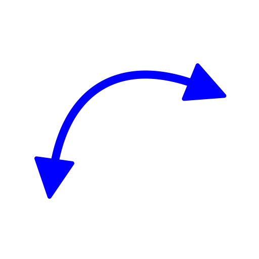
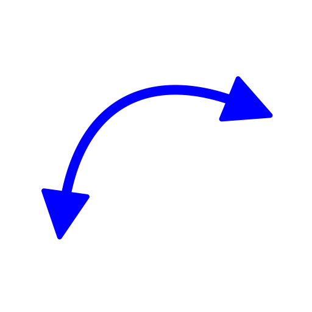
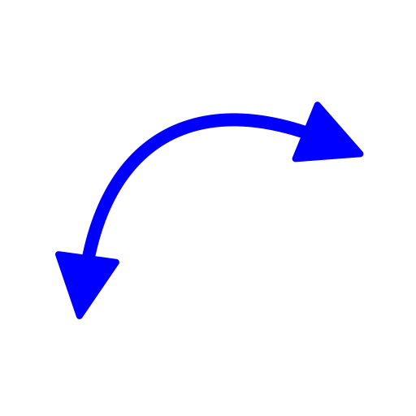

Menu: Modify - Reverse
Shortcut: R, V
Commands: reverse

Description:
This tool reverses the direction of all selected line, arc and ellipse arc entities. This is mostly useful for drawings that are being prepared for further processing (e.g. CAM).